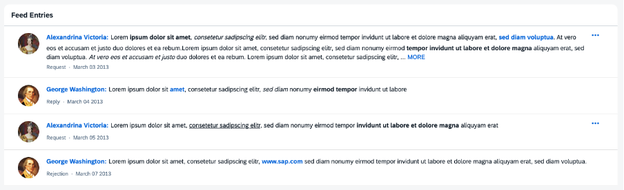

The sap.m.FeedListItem control is capable of displaying text
accompanied by an optional user image.

Responsiveness
The sap.m.FeedListItem control can be used in both small and
large containers.
Layout
The FeedListItem control consists of the user's name and an
optional picture of the user who wrote the note or the update (optional).
The name can contain a link that triggers a quick overview of the user's
profile data. The actual text written by the user follows the name. The
FeedListItem control includes the
sap.m.FormattedText control that enables you to use
HTML formatted text.
For more information
about the FormattedText control, see the API Reference and the Samples.
Behavior
When the text exceeds a certain number of characters (default value can be overwritten by the consuming application), the rest of the text is truncated and a MORE link appears. Clicking the link shows the entire text, and the link is renamed to LESS. Clicking LESS collapses the text back to its original truncated length.
Actions
Each item in the feed may also include an optional
More button that provides access to additional
actions that the user can perform on this feed item. The actions available
for a feed item are specified in its actions aggregation
and are defined using FeedListItemAction elements.
For more information
about the FeedListItemAction element, see the API Reference.
The sap.m.FeedListItem control can be used in combination with the
sap.m.FeedInput control as a feed or notes control. For more
information, see Feed Input.